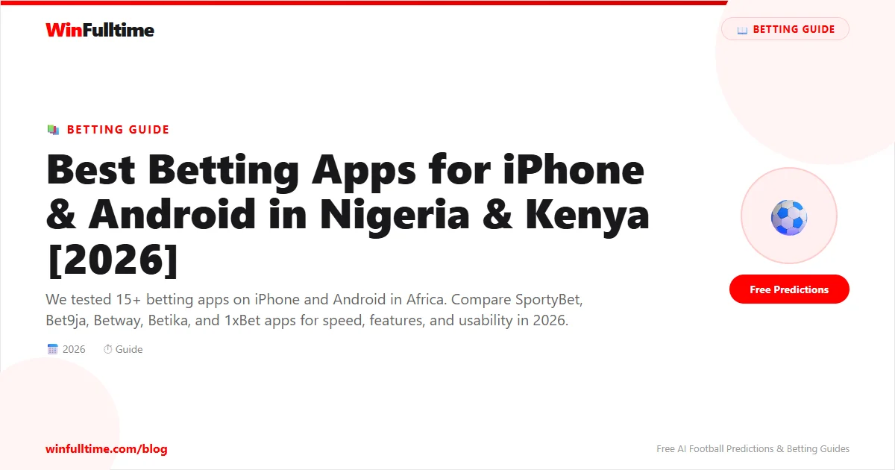

In Africa, betting happens on mobile. Over 95% of internet users in Nigeria and Kenya access the web through their phones, and the best betting sites know this. We downloaded and tested 15 betting apps on both iPhone and Android devices across Nigeria and Kenya, evaluating speed, ease of use, available features, data efficiency, and reliability on 3G/4G networks. Here are the results ranked.
Available on: iPhone (App Store) & Android (APK direct download) — Size: 32 MB
SportyBet has the best mobile betting app available in Nigeria and Kenya. It is the only major African betting app available on both the Apple App Store and Google Play Store, which means automatic updates and no sideloading. The interface is modern, clean, and responsive even on older phones. Navigation is intuitive: markets are clearly categorised, bet slips are easy to manage, and the cash-out feature is prominently displayed during live matches.
On iPhone (iOS 14+), the app feels native and polished. Push notifications for goals, cash-out opportunities, and bonus offers are timely without being spammy. On Android, the APK installs quickly and runs smoothly on devices with as little as 2 GB RAM. The app uses very little data compared to competitors, making it ideal for users on prepaid data plans.
Verdict: 9.2/10 — The best all-round betting app experience for African users.
Available on: Android (APK) & Mobile Web — Size: 28 MB
Betika is the most popular betting app in Kenya, and for good reason. Their Android app is fast, lightweight, and deeply integrated with M-Pesa for deposits and withdrawals. The app excels at live betting with real-time odds updates that are among the fastest in the market.
The Betika app is particularly strong for jackpot betting. Their "Mega Jackpot" promotion is prominently featured, and the app makes it easy to build your selections and share your jackpot slip with friends. On older Android devices, the app performs well, loading quickly even on 3G networks. The dark theme is easy on the eyes during late-night football sessions.
One notable downside: Betika does not have an iOS app (iPhone users must use the mobile website). For Android users though, this is among the best betting apps in Africa.
Verdict: 8.7/10 — The best Android betting app in Kenya.
Available on: Android (APK) & Mobile Web — Size: 45 MB
Bet9ja's mobile app is the most feature-rich Nigerian betting app. With over 80 markets per NPFL match and thousands of pre-match and in-play options daily, the app offers more betting opportunities than any competitor. The app includes Bet9ja's full virtual sports offering, a comprehensive cash-out feature, and integrated results and statistics.
On Android, the app is reliable but feels slightly dated compared to SportyBet. The interface packs a lot of information into small spaces, which can feel overwhelming initially. The app is also noticeably larger (45 MB) and uses more data than competitors. There is no iOS version, so iPhone users must use the mobile website. The mobile site is functional but lacks some of the app's features like push notifications and faster bet slip loading.
Verdict: 8.4/10 — Best for serious bettors who want the most markets.
Available on: iPhone (App Store) & Android (Google Play) — Size: 35 MB
Betway offers the best live streaming experience of any betting app available in Africa. The app streams over 40,000 live events annually, including Premier League, La Liga, Serie A, and Champions League matches directly on your phone. The stream quality adjusts automatically based on your connection speed, working well on both 4G and stable 3G connections.
The Betway app is available on both the Apple App Store and Google Play Store, making installation simple. The interface is polished and professional, with a dark theme that looks great on modern smartphones. In-play betting is tightly integrated with the streaming service, allowing you to watch and bet on the same screen. The cash-out feature works well during streams, and Betway's "Bet Builder" is one of the most advanced available.
Verdict: 8.2/10 — Best app if live streaming matters to you.
Available on: iPhone (App Store via Safari) & Android (APK) — Size: 40 MB
The 1xBet app is a feature powerhouse. It offers over 1,000 betting markets daily, live streaming of major leagues, a comprehensive virtual sports section, casino games, and even a built-in browser for accessing the mobile site. The app supports over 60 payment methods including M-Pesa, Airtel Money, bank transfers, and cryptocurrency.
The app is available in Nigeria, Kenya, Ghana, Uganda, Tanzania, and South Africa, making it the most widely available app on this list. However, the interface is busy and can be overwhelming for new users. The app is also known for sending frequent promotional notifications, which some users find excessive. On iPhone, the app is not available directly on the App Store (you install it via a Safari shortcut), which is less convenient.
Verdict: 7.8/10 — Best for users who want everything in one app.
| Feature | SportyBet | Betika | Bet9ja | Betway | 1xBet |
|---|---|---|---|---|---|
| iOS App | Yes | No | No | Yes | Via Safari |
| Android APK | Yes | Yes | Yes | Yes | Yes |
| App Size | 32 MB | 28 MB | 45 MB | 35 MB | 40 MB |
| Live Streaming | No | No | No | Yes | Yes |
| Cash Out | Yes | Selected | Most markets | Yes | Yes |
| M-Pesa | Yes | Yes | No | Yes | Yes |
| Bank Transfer | Yes | Yes | Yes | Yes | Yes |
| 3G Performance | Excellent | Excellent | Good | Good | Average |
| Data per 30 min | ~3 MB | ~4 MB | ~8 MB | ~6 MB | ~7 MB |
| Push Notifications | Yes | Yes | Yes | Yes | Yes |
| App Store Rating | 4.5 | 4.3 | 4.1 | 4.4 | 4.0 |
There is a significant gap between Android and iPhone betting app availability in Africa. Of the five major betting apps we tested, only SportyBet and Betway are available directly on the Apple App Store. Bet9ja and Betika do not offer iOS apps at all. 1xBet offers an iOS app but requires installation through a Safari workaround rather than the official App Store.
Android users have more options with all five apps available. However, most require manual APK download and installation rather than Google Play Store availability. Only Betway and SportyBet are on the Google Play Store. For security-conscious users, downloading APKs from official betting site websites is safe, but you should never download APKs from third-party sources.
Key Takeaway: iPhone users should go with SportyBet or Betway. Android users have the widest selection, with Betika being the top choice in Kenya and SportyBet leading in Nigeria.
Generate optimized accumulator combinations from today's AI-powered predictions. Set your target odds and get instant ticket suggestions.
Pro Ticket Builder →